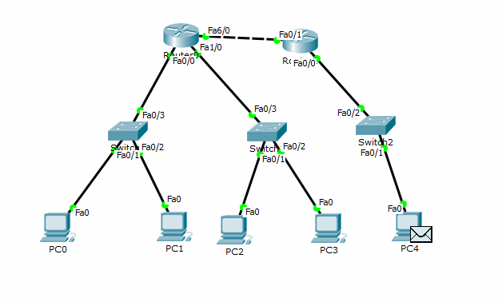

00:00:00
Коноводова Виктория ИДМ-19-02
Лабораторная работа №1 "Экосистема разработки программ с открытым кодом"
В процессе выполнения первой лабораторной работы были созданы аккаунт на GitHub и страница-отчет с использованием GitHub как хостинг

Лабораторная работа №2 "Разработка простого веб-приложения"
Сформирована команда для выполнения проекта и распределены роли:
- Коноводова Виктория (Администрирование, Системное программирование)
- Табольский Егор (Бизнес-анализ, Консалтинг, Внедрение)
- Титоренко Иван (Администрирование, Управление проектами, Прикладное программирование
- Юшкин Кирилл (Системное программирование, Прикладное программирование, Научные исследования
Разработан проект: "Сайт-визитка для фотографа Александра Прокопенко"
Отснят и смонтирован рекламный ролик для фотографа (он представлен на сайте)
В мои задачи на данном проекте входило: создание презентации проекта
Лабораторная работа №3 "Настройка локальной сети передачи данных"
Данная лабораторная работа выполнялась в программе Cisco Packet Tracer
Исходные данные :

Последовательность действий:
1) Разместить на рабочем поле коммутатор и два компьютера и соединить их.
2) Настроить адресацию на добавленных компьютерах без шлюза по умолчанию.
3) Выполнить проверку работоспособности сети.
4) Добавить на рабочее поле еще один коммутатор с двумя компьютерами и настроить адресацию из другой подсети
5) Соединить коммутаторы между собой и проверить работоспособность сети.
Сеть неработоспособна, так как в сетях А и В разная адресация. Для правильной работы необходимо использовать маршрутизатор.
6) Добавить маршрутизатор на рабочее поле, настроить интерфейсы маршрутизатора для существующих подсетей и проверить работоспособность.
Сеть наработоспособна из-за отсутствия маршрутов по умолчанию.
7) Указать шлюз по умолчанию.
8) Добавить на рабочее поле еще один маршрутизатор, подключить к нему коммутатор и компьютер
9) Настроить сетевые настройки. Соединить между маршрутизаторы и настроить между ними сеть с префиксом /30.
Проверить работоспособность сети, отправив сообщение сети A в сеть С и из сети В в сеть С
Сеть не работает, так как не настроена статическая маршрутизация.
10) Настроить статическую маршрутизацию
12) Установить баннеры на сетевое оборудование
Анимация работы сети:

Подготовка к экзамену
Билет №11
Вопрос № 1. Виды документов на автоматизированные системы. Требования к содержанию и оформлению.
Виды документов на АС описаны в ГОСТ 34.201-89 Информационная технология (ИТ). Комплекс стандартов на автоматизированные системы. Виды, комплектность и обозначение документов при создании автоматизированных систем.
На каждой стадии разработки АС имеется свой комплект документов.
Требования к содержанию документов содержатся в РД 50-34.698-90 Методические указания. Информационная технология. Комплекс стандартов и руководящих документов на автоматизированные системы. Автоматизированные системы. Требования к содержанию документов.
Требования к оформлению описаны в ГОСТ 19.106-78 ЕСПД. Требования к программным документам, выполненным печатным способом.
Вопрос № 2. Физические каналы связи и протоколы передачи данных в интернете.
Физические каналы связи:

Протоколы передачи данных в интернете.
Протокол - это формализованные правила, определяющие последовательность и формат сообщений, которыми обмениваются сетевые компоненты, лежащие на одном уровне, но в разных узлах.
Стек протоколов - иерархически организованный набор протоколов, достаточный для организации взаимодействия узлов в сети.
В сети Интернет используется стек протоколов TCP/IP, который включает в себя следующие протоколы: